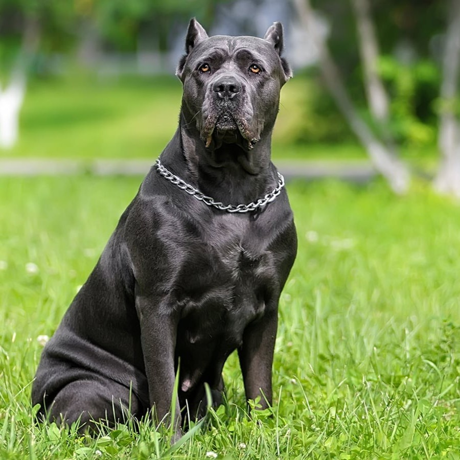
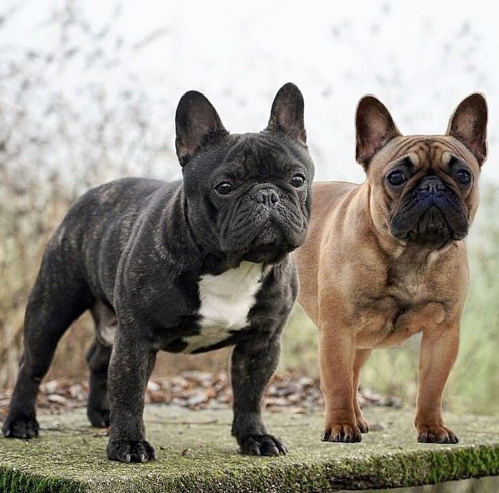
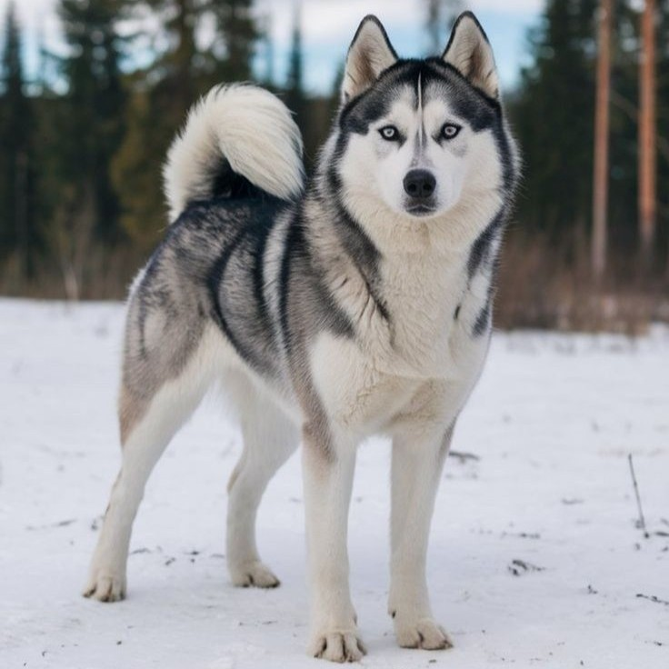
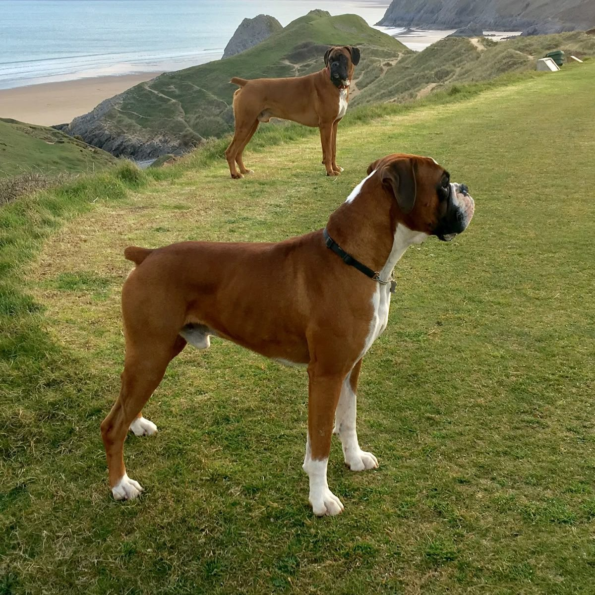
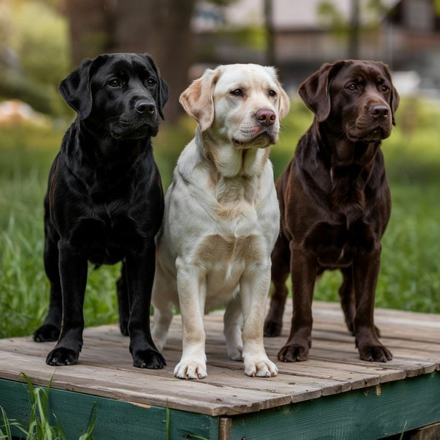

Cane Corso:
The Cane Corso is a majestic Italian mastiff known for its imposing
stature, powerful musculature, and deep loyalty. Originally bred for
guarding property and hunting big game, it serves as a fearless
protector that is deeply devoted to its family. Despite its tough
exterior, it is highly intelligent and tends to be calm and
affectionate with its inner circle. However, due to its size and
dominant nature, it requires early socialization and confident
leadership. It is an ideal companion for experienced owners who can
provide consistent training and regular physical exercise.

French Bulldog:
The French Bulldog is a small, sturdy dog breed known for its
bat-like ears, compact body, and friendly personality. Originally
bred in France, it became a popular companion dog due to its
affectionate nature and adaptability. Despite its small size, it is
quite sturdy and has a strong personality. It is known for being
playful, intelligent, and highly social, making it an excellent
family pet. However, due to its brachycephalic (short-nosed)
structure, it can be prone to breathing difficulties and requires
careful attention to temperature control.

Siberian Husky:
The Siberian Husky is a stunning medium-sized working dog, famous
for its wolf-like appearance, thick double coat, and striking blue
or multicolored eyes. Originally bred by the Chukchi people for
pulling sleds over long distances, they possess incredible
endurance, speed, and a high-energy "work ethic." They are highly
intelligent but notoriously independent and stubborn. Because of
their history, they need significant daily exercise and a secure
yard to prevent them from following their strong instinct to run and
explore.

Boxer:
The Boxer is a sleek, muscular dog from Germany, famously known as
the "Peter Pan" of the canine world due to its playful, high-energy
personality that lasts well into adulthood. Originally bred for
hunting and guarding, they are incredibly loyal protectors who form
deep bonds with their human families. While they can be headstrong
and require consistent training, their intelligence and goofy sense
of humor make them wonderful companions. Because they are so
athletic, they need plenty of daily exercise and mental stimulation
to stay happy and out of trouble.

Dachshund:
The Dachshund, affectionately known as the "wiener dog," is a small
hound from Germany originally bred to scent, chase, and flush out
badgers and other burrow-dwelling animals. They are famous for their
unique silhouette: a long, low-slung body with short, sturdy legs
and a deep chest that provides ample lung capacity for underground
work. They come in two sizes (Standard and Miniature) and three coat
types: smooth, long-haired, and wire-haired. Despite their size,
Dachshunds are incredibly brave, independent, and sometimes
stubborn, possessing a loud bark that rivals much larger dogs.

Labrador Retriever:
The Labrador is friendly, outgoing nature and exceptional
versatility. Originally from Newfoundland, they were bred as "water
dogs" to help fishermen retrieve nets and escaped fish, which
explains their water-resistant double coat and unique "otter tail"
used for swimming. They are highly intelligent and eager to please,
making them top choices for service work, search and rescue, and
family companionship. Labs are famously food-motivated and
high-energy, requiring plenty of daily exercise, their gentle
temperament and patience make them legendary family dogs.